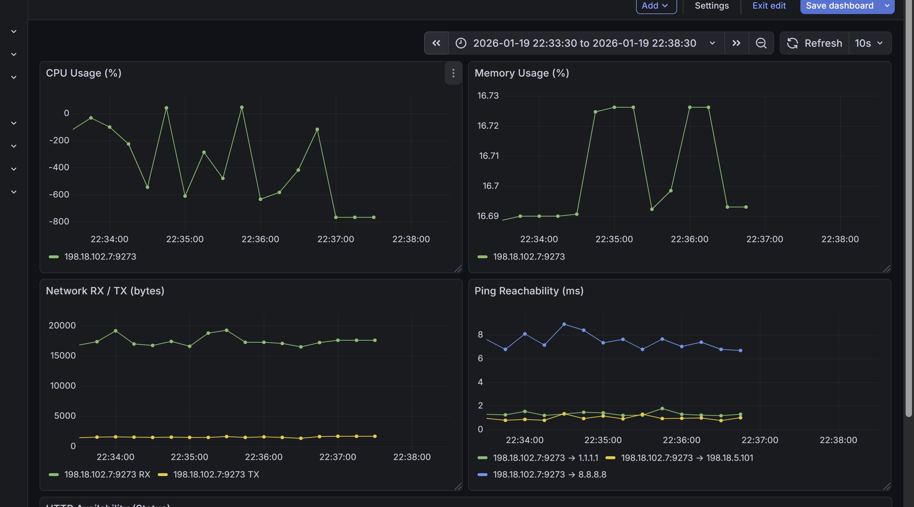
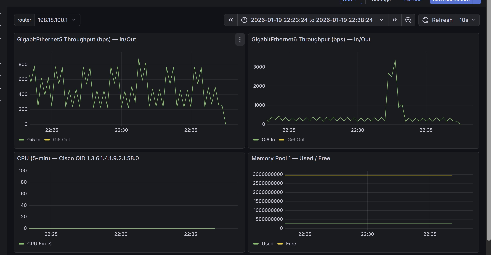

Task 12: Telegraf Monitoring with Prometheus Exporter¶
Objective¶
In this task, you deploy and extend a Telegraf-based monitoring probe running inside a container to demonstrate how modern telemetry pipelines can be built on edge devices.
You will:
- Collect container self-metrics (CPU, memory, disk, network)
- Perform ICMP reachability and HTTP/HTTPS availability checks
- Expose metrics via a Prometheus
/metricsendpoint - Extend the same probe to collect router metrics using SNMP
- Visualize both container and router metrics centrally using Prometheus and Grafana
This task is divided into two continuous parts using the same Telegraf container.
Page Index¶
Part 1 – Container & Service Monitoring¶
- Lab Architecture
- Step 1: Prepare Telegraf Configuration Directory
- Step 2: Create Base Telegraf Agent Configuration
- Step 3: Create Lab Configuration (Container, Ping, HTTP)
- Step 4: Validate Telegraf Configuration
- Step 5: Start Telegraf
- Step 6: Verify Metrics from Management Node
- Step 7: Visualize Container Metrics in Grafana
Part 2 – Router Monitoring via SNMP¶
- Step 8: Extend Telegraf with SNMP Monitoring
- Step 9: Validate SNMP Configuration
- Step 10: Verify SNMP Metrics Export
- Step 11: Visualize Router Metrics in Grafana
- Lab Completion Criteria
- Key Takeaway
- Summary
Lab Architecture¶
Logical Components¶
-
Telegraf Container (Swiss-Knife)
-
Collects container metrics
- Executes ICMP and HTTP probes
- Polls routers using SNMP
- Exposes
/metricson port9273 -
Management Node
-
Prometheus (scrapes metrics)
- Grafana (visualization)
-
External Targets
-
Public IPs (ICMP)
- Public / internal HTTP services
- IOS-XE routers (SNMP)
Part 1 – Container & Service Monitoring¶
Step 1: Prepare Telegraf Configuration Directory¶
Connect to the Swiss-Knife container hosted on Cat8Kv-Task-2:
ssh 198.18.1.12
app-hosting connect appid swiss_knife session /bin/bash
Create the Telegraf configuration directory:
mkdir -p /etc/telegraf/telegraf.d
Step 2: Create Base Telegraf Agent Configuration¶
Create the global Telegraf agent configuration:
cat > /etc/telegraf/telegraf.conf <<'EOF'
[agent]
interval = "10s"
round_interval = true
metric_batch_size = 1000
metric_buffer_limit = 10000
flush_interval = "10s"
EOF
This file defines global agent behavior only.
All inputs and outputs are defined under telegraf.d.
Step 3: Create Lab Configuration (Container, Ping, HTTP)¶
Edit the lab configuration file:
vi /etc/telegraf/telegraf.d/lab.conf
lab.conf¶
[agent]
interval = "10s"
round_interval = true
flush_interval = "10s"
hostname = "swiss-knife-monitor"
omit_hostname = false
###############################################################################
# A) Container Self-Monitoring
###############################################################################
[[inputs.cpu]]
percpu = true
totalcpu = true
[[inputs.mem]]
[[inputs.net]]
[[inputs.disk]]
ignore_fs = ["tmpfs", "devtmpfs", "overlay"]
###############################################################################
# B) Network Reachability (ICMP)
###############################################################################
[[inputs.ping]]
urls = [
"8.8.8.8",
"1.1.1.1",
"198.18.5.101"
]
count = 3
timeout = 2.0
method = "native"
###############################################################################
# C) HTTP / HTTPS Availability
###############################################################################
[[inputs.http_response]]
urls = [
"https://www.google.com",
"https://www.cloudflare.com",
"http://198.18.5.101:3000"
]
response_timeout = "5s"
follow_redirects = true
###############################################################################
# D) Output – Prometheus Exporter
###############################################################################
[[outputs.prometheus_client]]
listen = ":9273"
path = "/metrics"
Step 4: Validate Telegraf Configuration¶
Validate the configuration before running Telegraf:
telegraf \
--config /etc/telegraf/telegraf.conf \
--config-directory /etc/telegraf/telegraf.d \
--test | head
Expected Result¶
- No errors
- Both config files are loaded
- Inputs loaded:
cpu disk http_response mem net ping - Sample metrics are generated
Note:
W! Outputs are not used in testing mode!is expected.
Step 5: Start Telegraf¶
Start Telegraf in continuous mode:
telegraf \
--config /etc/telegraf/telegraf.conf \
--config-directory /etc/telegraf/telegraf.d
Metrics are now exposed at: http://198.18.101.5:9273/metrics
Step 6: Verify Metrics from LAB Ubuntu Node¶
From the LAB Ubuntu node:
curl http://198.18.101.5:9273/metrics | head
Verify Prometheus targets:
curl http://198.18.5.101:9090/api/v1/targets
Step 7: Visualize Container Metrics in Grafana¶
- Open Grafana:
http://198.18.1.101:3000
The above link can be opned directly from the LAB PC
Login: admin / C1sco12345
- Navigate to:
Dashboards → Swiss-Knife Telegraf Lab
Expected Observations¶
- Container CPU and memory graphs update in real time
- Network RX/TX traffic is visible
- Ping and HTTP checks reflect reachability and availability

¶Part 2 – Router Monitoring via SNMP¶
Step 8: Extend Telegraf with SNMP Monitoring¶
Edit the existing lab configuration:
nano /etc/telegraf/telegraf.d/lab.conf
Append the SNMP configuration at the end of the file (Cat8Kv-Task-1 / Task-2 / Task-3).
###############################################################################
# SNMP Monitoring – Cat8Kv-Task-1
###############################################################################
[[inputs.snmp]]
agents = [ "udp://198.18.6.11:161" ]
version = 2
community = "public"
interval = "30s"
timeout = "5s"
retries = 2
name = "snmp"
agent_host_tag = "agent_host"
# GigabitEthernet5 (ifIndex 2)
[[inputs.snmp.field]]
name = "ifInOctets_gi5"
oid = "1.3.6.1.2.1.2.2.1.10.2"
[[inputs.snmp.field]]
name = "ifOutOctets_gi5"
oid = "1.3.6.1.2.1.2.2.1.16.2"
# GigabitEthernet6 (ifIndex 3)
[[inputs.snmp.field]]
name = "ifInOctets_gi6"
oid = "1.3.6.1.2.1.2.2.1.10.3"
[[inputs.snmp.field]]
name = "ifOutOctets_gi6"
oid = "1.3.6.1.2.1.2.2.1.16.3"
# CPU – 5 minute average
[[inputs.snmp.field]]
name = "cpu_5min"
oid = "1.3.6.1.4.1.9.2.1.58.0"
# Memory Pool 1
[[inputs.snmp.field]]
name = "mem_pool1_used"
oid = "1.3.6.1.4.1.9.9.48.1.1.1.5.1"
[[inputs.snmp.field]]
name = "mem_pool1_free"
oid = "1.3.6.1.4.1.9.9.48.1.1.1.6.1"
###############################################################################
# SNMP Monitoring – Cat8Kv-Task-2
###############################################################################
[[inputs.snmp]]
agents = [ "udp://198.18.7.12:161" ]
version = 2
community = "public"
interval = "30s"
timeout = "5s"
retries = 2
name = "snmp"
agent_host_tag = "agent_host"
# GigabitEthernet5 (ifIndex 2)
[[inputs.snmp.field]]
name = "ifInOctets_gi5"
oid = "1.3.6.1.2.1.2.2.1.10.2"
[[inputs.snmp.field]]
name = "ifOutOctets_gi5"
oid = "1.3.6.1.2.1.2.2.1.16.2"
# GigabitEthernet6 (ifIndex 3)
[[inputs.snmp.field]]
name = "ifInOctets_gi6"
oid = "1.3.6.1.2.1.2.2.1.10.3"
[[inputs.snmp.field]]
name = "ifOutOctets_gi6"
oid = "1.3.6.1.2.1.2.2.1.16.3"
# CPU – 5 minute average
[[inputs.snmp.field]]
name = "cpu_5min"
oid = "1.3.6.1.4.1.9.2.1.58.0"
# Memory Pool 1
[[inputs.snmp.field]]
name = "mem_pool1_used"
oid = "1.3.6.1.4.1.9.9.48.1.1.1.5.1"
[[inputs.snmp.field]]
name = "mem_pool1_free"
oid = "1.3.6.1.4.1.9.9.48.1.1.1.6.1"
###############################################################################
# SNMP Monitoring – Cat8Kv-Task-3
###############################################################################
[[inputs.snmp]]
agents = [ "udp://198.18.8.13:161" ]
version = 2
community = "public"
interval = "30s"
timeout = "5s"
retries = 2
name = "snmp"
agent_host_tag = "agent_host"
# GigabitEthernet5 (ifIndex 2)
[[inputs.snmp.field]]
name = "ifInOctets_gi5"
oid = "1.3.6.1.2.1.2.2.1.10.2"
[[inputs.snmp.field]]
name = "ifOutOctets_gi5"
oid = "1.3.6.1.2.1.2.2.1.16.2"
# GigabitEthernet6 (ifIndex 3)
[[inputs.snmp.field]]
name = "ifInOctets_gi6"
oid = "1.3.6.1.2.1.2.2.1.10.3"
[[inputs.snmp.field]]
name = "ifOutOctets_gi6"
oid = "1.3.6.1.2.1.2.2.1.16.3"
# CPU – 5 minute average
[[inputs.snmp.field]]
name = "cpu_5min"
oid = "1.3.6.1.4.1.9.2.1.58.0"
# Memory Pool 1
[[inputs.snmp.field]]
name = "mem_pool1_used"
oid = "1.3.6.1.4.1.9.9.48.1.1.1.5.1"
[[inputs.snmp.field]]
name = "mem_pool1_free"
oid = "1.3.6.1.4.1.9.9.48.1.1.1.6.1"
Step 9: Validate SNMP Configuration¶
Test SNMP polling:
telegraf \
--config /etc/telegraf/telegraf.conf \
--config-directory /etc/telegraf/telegraf.d \
--test | grep snmp
Start Telegraf in continuous mode:
telegraf \
--config /etc/telegraf/telegraf.conf \
--config-directory /etc/telegraf/telegraf.d
Expected Output¶
Metrics such as:
snmp_ifInOctets_gi5snmp_ifOutOctets_gi6snmp_cpu_5minsnmp_mem_pool1_used
Step 10: Verify SNMP Metrics Export¶
From the LAB Ubuntu node:
curl http://198.18.101.5:9273/metrics | grep snmp | head
Verify Prometheus ingestion:
curl http://198.18.5.101:9090/api/v1/series -d 'match[]=snmp_cpu_5min'
Step 11: Visualize Router Metrics in Grafana¶
- Open Grafana
- Navigate to:
Dashboards → Cat8Kv SNMP via Telegraf
- Select router from the router dropdown (e.g.
198.18.7.11)
Expected Results¶
- Gi5 / Gi6 throughput graphs populate
- CPU (5-minute average) updates
- Memory used/free graphs update

Lab Completion Criteria¶
You have successfully completed this lab when:
- Telegraf exports container and SNMP metrics
- Prometheus ingests all metrics
- Grafana visualizes container and router telemetry
- Router metrics correlate with legacy MRTG behavior
Key Takeaway¶
This task demonstrates how traditional monitoring (SNMP/MRTG) and modern telemetry can coexist by:
- Using a containerized probe at the edge
- Exporting metrics via Prometheus
- Visualizing correlated infrastructure and application health
Summary¶
In this task, you deployed and extended a Telegraf monitoring container to:
- Monitor container health and services
- Perform network reachability and availability checks
- Collect router metrics using SNMP
- Export all telemetry using a Prometheus-native model
This forms the foundation for scalable, vendor-neutral observability on edge platforms.